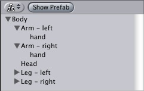

The transform component decides the physical location of your objects in the scene. All objects have a transform.
Objects in your scene can be attached to each other, called parenting. Each object can have multiple children, but only one parent. When you move an object, all its children move with it. For more info, see below.
Properties
| Property: | Function: |
|---|---|
| The position of the object, relative to its parent. | |
| The rotation of the object, relative to its parent. | |
| The scale of the object, relative to its parent |
Details
To manipulate object positions in your scene, click on them in the scene view and use the move, rotate and scale tools, located in the top-left part of the main window.
If you have an object hovering a bit above a floor, use 'Object->Place on surface' from the main menu to move it down.
Parenting
Parenting is one of the most important concepts to understand when using Unity.
|  |
The principle behind parenting is simple; you can attach objects to each other - just like your arms are attached to your body. When you turn your body, your arms move. An object can only have one parent (just like your arm can only be on attached to one body), but each object can have many children (you have two arms, after all).
In this example, we would say that the arms are parented to the body, and the hands are parented to the arms. The scenes you make in Unity are collections of these transform hierarchies. The topmost object is called the root object. When you move, rotate or scale an object, all children are affected.
You build compound objects by parenting multiple separate objects together. If you have a miner in a game, you can add a miner's lamp to his helmet, simple by parenting a spotlight object to the helmet.
At any time, you can see your scene hierarchy in the Hierarchy window, shown above. Here, you can change parenting by dragging objects around.
The other way to set up parents are using selections: click on two or more objects in the scene view, ending with the object you want to become the parent and select 'Object->Make Parent' from the main menu. To remove a child from a parent, select the child in the scene view select 'Object->Clear Parent'.
Hints
- To quickly reset the transform of an object, use Reset Component, found in the component menu.
- You cannot scale a particle system. in order to do that, you need to modify the particle emitter, animator and renderer properties.